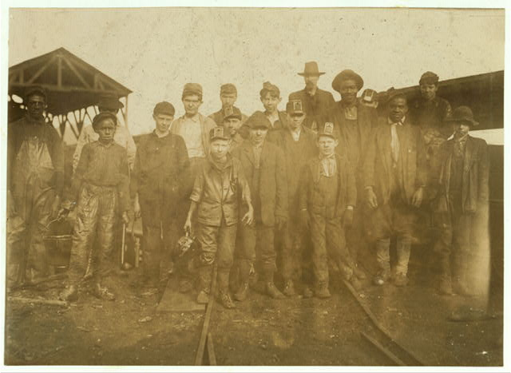

The peak


By 1914 there were more than six hundred men going underground at Brookside every morning, which is worth sitting with for a second, because four years before that the same mine had been down to fifty four. On the hillside above them Sloss ran 288 domed brick ovens, built shoulder to shoulder so they would hold each other's heat and charged through a hole in the roof. A town grew to serve all of it. By 1900 Brookside had a railroad depot, dry goods stores, a drugstore, and more than one saloon, and its first school went up that same year. Cardiff took its charter in January 1900 with more than 560 people, several stores, two blacksmith shops, and a saloon of its own, and in 1911 it put on a street tax of two dollars and fifty cents a year that paid for road work all the way to 1946. By 1910 Slovak families made up roughly 37 percent of Brookside, and in 1916 that community finished the St. Nicholas building you can still go and see. Nearly everything these three towns still get measured against was built, counted, or finished inside these twenty years, which is also why the last entry lands the way it does. Cardiff's downtown burned on 20 July 1919, and the town's fortunes turned down with it.
What happened, and when
—- January 1900CardiffGovernment
Cardiff takes its charter
Cardiff incorporated in January 1900 with more than 560 people, several stores, two blacksmith shops, and a saloon.
- 1900BrooksideTown life
A depot, a drugstore, and several saloons
By 1900 Brookside had a railroad depot, dry goods stores, a drugstore, and more than one saloon. Its first school went up the same year and was replaced in 1923.
- The early 1900sBrooksideCoal
288 beehive coke ovens
Sloss ran 288 domed brick ovens at Brookside, built shoulder to shoulder so they would hold each other's heat and charged through a hole in the roof.
- The early 1900sGraysvilleChurch
One church for everybody
The Union Church went up a street over from downtown Graysville. It was the only church for miles, so every denomination met in it.
- 1911CardiffGovernment
Two dollars and fifty cents a year for the roads
Cardiff put on a street tax of $2.50 a year in 1911, and the road work it paid for ran on until 1946.
- 1913BrooksideCoal
Machines take over from the pick
Mechanical cutters replaced hand picks at the Brookside mine in 1913.
- 1914BrooksideCoal
Six hundred men underground
The Brookside mine employed over 600 men in 1914, the most it ever had. Four years before that it had been down to 54.
- 1916BrooksideChurch
The church you can still go see
The St. Nicholas building was finished in 1916 and re-faced in brick in 1965. It still puts on a Russian and Slavic food festival the first full weekend in November.
- July 20, 1919CardiffFire and storm
Downtown burns
Cardiff's downtown burned on July 20, 1919, and the town's fortunes turned down with it.
Every entry above carries the source it came from, and these are those sources in full. All of it is public material found online, so anything here can be followed back and checked. It also means that where this chapter says something is not recorded, what that really says is that it has not turned up in any of these, which is a smaller claim. If you know better, and somebody reading this probably does, it would be good to hear from you.
- Bhamwiki, Brookside
- Czechoslovak Genealogical Society International, Slovaks and Carpatho-Rusyns in Brookside, Alabama
- Encyclopedia of Alabama, Brookside
- Encyclopedia of Alabama, Cardiff
- Library of Congress, Brookside Coal Mine, Beehive Coke Ovens, Mount Olive Road north of the Five Mile Creek bridge
- Wikipedia, Brookside, Alabama
- Wikipedia, Graysville, Alabama
Fill in a gap
If you have a photograph, a date, a name, or a story about any of the three towns, send it. Corrections are just as welcome as additions, and this page gets better every time somebody who was there writes in.
fivemilec@gmail.com